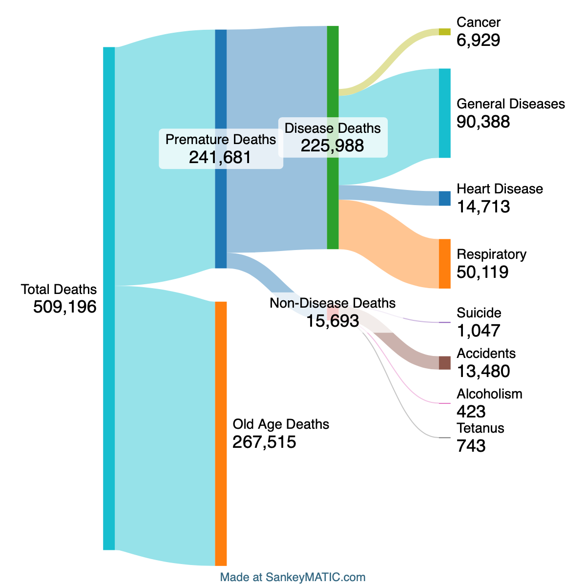

Question: How has the population distribution of the U.S. population evolved over the span of a century, from 1900 to 2000?
3 Sketch Visualizations
Population Pyramid
Motivation: Drawing inspiration from a high school class in human geography, the motivation behind generating the population pyramid sketches for 1900 and 2000 was to assess the demographic evolution of the United States over the 20th century. Population pyramids serve as effective tools for understanding the age distribution and development level of a country, with less developed nations typically exhibiting a triangular shape due to higher mortality rates, while more developed countries tend towards a rectangular shape owing to increased life expectancy and lower mortality rates.
Communication Goal: The primary aim was to communicate the extent of change in the demographic structure of the U.S. population, particularly focusing on indicators of improved health and development. By comparing the shape of the population pyramids between 1900 and 2000, the intention was to highlight any shifts towards a more rectangular shape in the latter, indicative of enhanced longevity and development.
Strengths: The visualization effectively captured the differences in population distribution between 1900 and 2000, providing a clear gender comparison and offering insights into changes in life expectancy and overall population structure. The simplicity of plotting points and connecting them facilitated the creation process.
Weaknesses: The granularity of the data, with numerous age bins, posed challenges in interpretation and may have hindered the ability to discern broader trends in population dynamics. Additionally, the data granularity limited the exploration of demographic shifts beyond age and gender. Further, it is a bit difficult to see differences between men and women across the Y axis.
Next Steps: In future visualizations, exploring the dataset with broader age groupings, such as breaking down populations into generational cohorts (e.g., children, young adults, older adults, senior citizens), would provide a more generalized understanding of the population composition. This approach could offer insights into how different age groups contribute to overall population dynamics and demographic trends, facilitating a more comprehensive analysis of societal changes over time.
Generational Pie Chart
Motivation: The motivation behind creating a pie chart illustrating the proportion of the population in each "generation" bin stemmed from the desire to analyze population trends in broader terms and to gain a clearer understanding of how the population composition has evolved from 1900 to 2000. Recognizing that distinctions between age groups such as children, adults, and the elderly hold more societal significance than finer age intervals, the decision was made to categorize the population into four distinct groups: Children (0-19), young adults (20-39), older adults (40-64), and senior citizens (65+). The age groupings were chosen with careful consideration of societal shifts and demographic dynamics over time. Setting the upper bound of the children category at 19 instead of 14 acknowledges contemporary perceptions of adolescence extending into the late teens. The choice of 20-39 for young adults reflects the prime childbearing years and acknowledges both financial and biological constraints associated with child-rearing. The 40-64 age bracket represents adults who are typically no longer having children but are actively engaged in the workforce. Lastly, the 65+ category aligns with general societal norms defining senior citizenship.
Communication Goal: The aim was to communicate changes in the population distribution across different age groups over the century, highlighting factors such as improvements in health and development leading to a higher proportion of senior citizens in 2000 compared to 1900, as well as societal trends contributing to a decrease in the proportion of children.
Strengths: The visualization effectively portrays shifts in population composition in a concise and intuitive manner, providing insights into broader demographic trends. By categorizing age groups into meaningful generational bins, the pie chart facilitates a clear understanding of changes in the distribution of different segments of the population.
Weaknesses: In analyzing the data when creating this chart, I noticed that in 1900, each age bin was almost exactly 50% male and 50% female. However, in 2000, this was not the case, with nearly 60% of those aged over 65 being Female. This data visualization places its focus on the age distribution of the United States without much consideration for gender.
Next Steps: In the next visualization, I would like to explore the relationship between male and female population proportions in 1900 and 2000 and how they change for each age range.
Male vs Female Area Chart
Motivation: The motivation behind creating an area chart was to demonstrate the increased longevity of women compared to men in the modern day. As shown in the previous 2 visualizations, in 1900, men and women survived at roughly equal rates for each age group, whereas in 2000, there were far more old women than old men, indicating greater female lonngevity. An area chart could effectively show this difference through tactical coloring under the curve to show either a male population surplus (1900) or female population surplus (2000).
Communication Goal: The goal of the graphic is to communicate that women in 2000 possess a longevity advantage as compared to men, especially when compared to 1900.
Strengths: This graph effectively shows a difference in the gender distributions between 1900 and 2000, and the use of different shades of blue annd pink aids in the ease of understanding.
Weaknesses: The graph can be difficult to interpret, and most likely requires further annotation. It also does not and cannot begin to explain why this shift has occurred given just teh population totals for each group of concern (men and women) in each year (1900 and 2000)
Next Steps: In future analysis, it would be beneficial to explain the reasons why this phenomenon is occurring. This would require more specific data pertaining to female and male longevity as they relate to eachother through risk factors and death rates.
Analysis: I believe that the sketches are effective in describinng various aspects of the data. The first two thrive on simplicity, and are both easy to read and explain valuable trends in the data; namely age composition in 1900 and 2000. The third chart is an attempt to compare both gender and year on 2 axes to allow for the inclusion of just a single chart for both years. However, I think it fails in terms of its ease of readability and requires annotation for the reader to easily understand it. In terms of further analysis, I believe that the comparison between the data for each gender across time is the most interesting aspect to explore, and the third visualization has gotten me closest to the final goal of explaining the change in the difference in longevity between men and women.
Phase 2: Final Design
Updated Question: Why are women living longer than men now as compared to 1900?
Motivation: I chose to analyze this question for a few reasons. Firstly, I noticed that in 1900 there were roughly an equal amount of men and women over the age of 65, however by 2000 women far outnumbered men. This indicates that over time, the female lifespan has increased faster than the male lifespan.
I decided to calculate various figures relating to the age distribution of the US population of both genders in 1900 and 2000, which revealed the following:
Age of various Percentiles of the US Population
1900
2000
Percentile
Men (Years)
Women (Years)
Men (Years)
Women (Years)
25
10.79
10.45
16.77
18.34
50
23.44
22.52
34.41
36.60
75
34.30
33.35
50.00
53.30
90
54.32
54.17
65.64
71.14
95
63.02
63.20
73.98
78.96
As you can see, in 1900, approximately 5% of men and women were 63 years or older, whereas in 2000, more women reached an older age than their male counterparts.
This went against my intuition for a few reasons:
Improved Working Conditions: In 1900, many American men worked in dangerous jobs with high mortality rates. Further, women were often excluded from the workplace, meaning that these types of deaths should have almost exclusively affected the male population. By 2000, the workplace death rate had decreased drastically, and should have become more equal between the 2 genders as female participation in the workforce increased. Between these 2 factors, men should have gained some lifespan compared to their female counterparts.
Improved Public Health: In 1900, most people engaged in practices that decreased their life expectancy, including improper disposal of waste and smoking tobacco. These risk factors largely affected men, and with their reduction in the modern day, I would once again expect men to have gained ground on women in terms of life expectancy.
Improved Medical Treatment: Given the increased risk factors of male livelihood as compared to women (higher rates of cancer, higher workplace deaths, higher smoking rate), one would expect that as healthcare treatments improved and reduced the impact of these risk factors that the American male lifespan would improve with respect to the American female lifespan.
A largely eliminated risk factor for premature death that women faced in 1900 was death through child birth. This would mostly affect women between the ages of 20 and 40 and would explain why in 1900 more men were making it to the age of 35 than women (as shown in the 75th percentile), whereas in 2000 this was not the case.
In accordance with these findings, I decided to investigate why women are now living longer than men. In order to do so, I would need data concerning a few topics:
Premature Deaths: Since both men and women are living longer in 2000 vs 1900, one would expect that this should go down for both genders. However, if the decrease in female premature deaths is greater than that of men, this would explain the relative increase in female longevity. For example, let us assume that in 1900, 50% of women and 50% of men died prematurely. In 2000, let us say that these numbers were 10% and 20% respectively. This would demonstrate an increase the lifespan of both men and women with a greater win for women.
Age of Incidence of Old Age Risk Factors: Common causes of modern death are often attributed to old age, like cancers, Alzheimer's, and other degenerative conditions. If men, on average, contract these at a younger age, that would explain why men are dying at a younger "old age" than women.
In order to analyze the causes of death for men and women in 1900 and 2000, I applied cause of death data from the US Census for both years. The sources used for data are attached below:
In order to determine why men are now dying earlier than women, I decided to investigate the reasons that cause both parties to die young. I define a premature death to be any death occurring under the age of 65, as those are certainly not attributable to old age. According to what we currently know, in 1900, the premature death counts for men and women should be relatively comparable, and in 2000, the premature death rates should fall, but fall more for women than for men. Through the data, we can determine what specific causes are creatinng the disparity between women and men.
To visualize this, I decided to employ a Sankey Diagram, showing a flow of the causes of death for men and women in each year. This type of diagram possesses a few disticnt benefits:
Visualizing Flow and Relationships: Sankey diagrams are excellent at illustrating the flow and relationships between different categories or entities. In this case, it can effectively show how various causes of death are distributed among men and women in different years. The width of the flow lines can represent the magnitude or frequency of each cause, providing a clear visual comparison.
Clarity and Conciseness: Sankey diagrams present complex information in a clear and concise manner, making it easier for viewers to understand the distribution of causes of death without overwhelming them with excessive detail. The visual representation helps viewers grasp the relative importance of each cause and its contribution to overall mortality.
Insightful Interpretation: Through the visualization of causes of death, viewers can gain insights into health trends, societal changes, and potential areas for further research or intervention. The visualization may reveal patterns such as shifts in disease prevalence, advancements in medical treatment, or disparities in healthcare access between genders.
Causes of US Male Deaths in 1900

Causes of US Female Deaths in 1900
Above, the Sankey Diagrams for men and women in 1900 are displayed.
Causes of US Male Deaths in 1997Causes of US Female Deaths in 1997
Above, the Sankey Diagrams for men and women in 1997 are displayed.
Analysis
Design Rationale: I previously mentioned my rationale for including this type of diagram; namely that it communicates a breadth of data that flows together concisely and accurately. In terms of constructing the diagram itself, I chose to break the data in the same places for men and women to allow for a direct one to one comparison. I decided to include all deaths for each gender as the set of total data for each diagram. This is because I am exploring the longevity of each group via analyzing the early deaths, and juxtaposing premature deaths againsnt total deaths (and thus non-premature deaths) will provide a useful backdrop for comparisons across genders and years, explaining the improvement in life expectancy and demonstrating any potential male-female gap. I then decided to distinguish premature deaths into 2 main categories: Disease Deaths and Non-Disease deaths. This is because a few things contribute to deaths in a society. Premature disease deaths are often explicable by the aforementioned factors of public health and medical treatment, while non-disease deaths are generally explained by societal factors. For each of these, I decided to highlight the most impactful few causes in order to provide the most informative visualization and allow for easy comparison in root causes of death across gender and year.
Data Findings: The data reveals a few interesting facts. Firstly, in 1900, premature deaths between men and women were similar, with women experiencing death at under 65 at a rate of over 86% of that of men. In terms of the reasons for these premature deaths, women and men in 1900 had nearly identical amounts of disease deaths, with men experiencing higher rates of respiratory death and women experiencing higher rates of cancer and heart disease. The main difference in early deaths between men and women in this time comes from non-disease deaths, from sources like accidents, suicide, alcoholism, and tetanus. Men have a markedly higher rate of these, most notably from accidents. In 1997, there are some distinct differences. Men in 1997 died prematurely more than 67% more than women, with bboth disease deaths and non-disease deaths being higher. Men in the modern era are much more likely to die early from HIV and Heart disease than women, with comparable rates of cancer. Men in 1997 still possess a similar incidence of non-disease deaths at more than 3 times that of women, with deaths relating to suicide, homicide, and accidents all being markedly higher. The most interesting change betweenn the two in my opinion is the reversal of the relationship between male and female heart disease deaths, with men now dying prematurely at more than double the rate of women
Relationship to Phase 1: Phase 1 influenced me to use a diagram that can communicate many different orders of magnitude of data all in one. I knew I would be dealing with numbers that range in value quite drastically, and using a Sankey Diagram allowed me to display all of these to be seen with relative ease. Further, I knew I wanted to use something involving color and flow to differentiate between different but connected pieces of data, like I did in my third sketch visualization. The one aspect that I wish I was able to employ with this graphic was timescale. Unfortunately, the axes being used are magnitude and flow relationship between data, which doesn't allow for a chronological axis as well. A possible way to integrate this would be a slope chart or area chart between 1900 and 2000, showing the prevalence of various causes of premature death and their evolution. However, this could be too complex for the viewer to benefit from and would also require substantially more data cleaning. I had to do a lot of math and parsing pertaining to the 1900 cause of death data, and doing similar for many more years would be untenable.